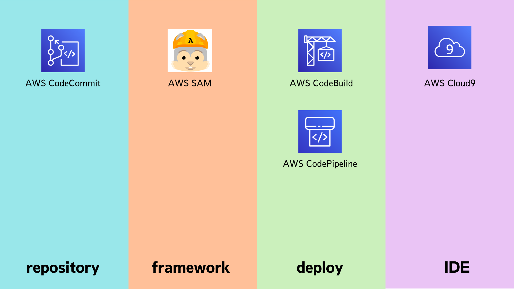
LambdaのCI/CDを構築するための方法は、様々ありますが、 今回は以下のものを使用します
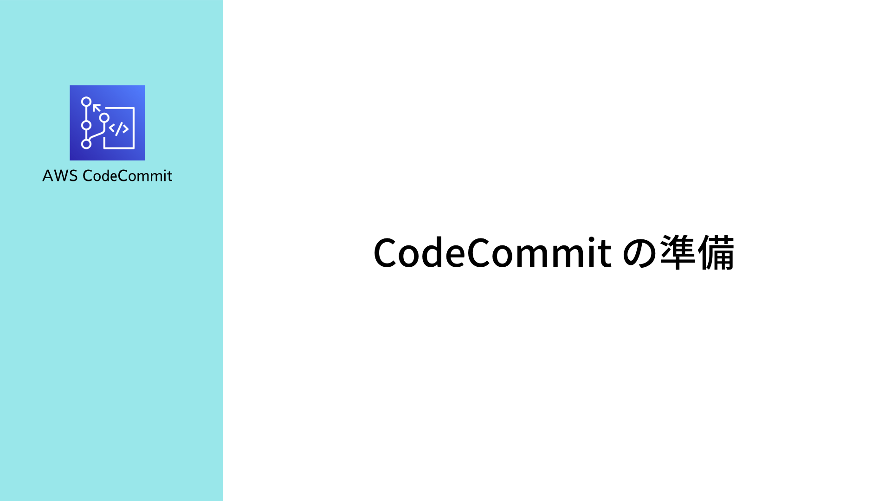
AWS内で使用することができる Git リポジトリである、CodeCommit を作成します。 ここにソースコードをおいて、管理をします。 また、最後に複数環境を用意しますが、リポジトリのブランチを変えることで実現します。
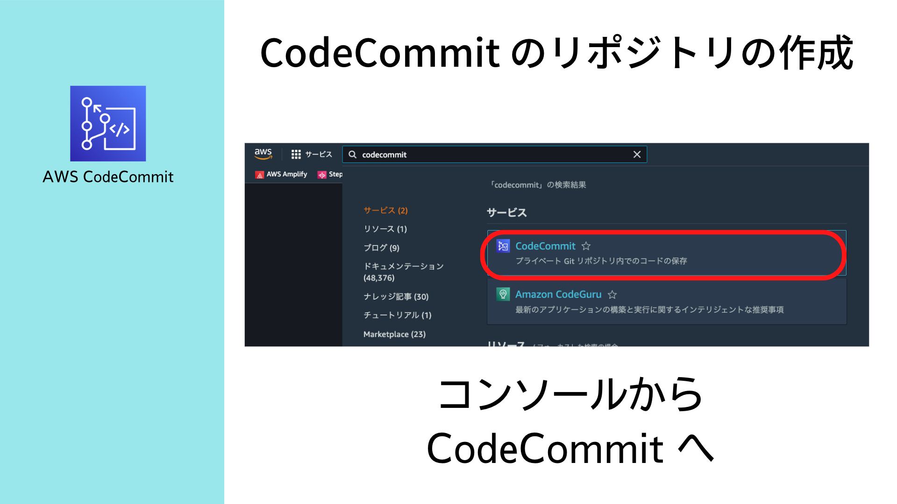
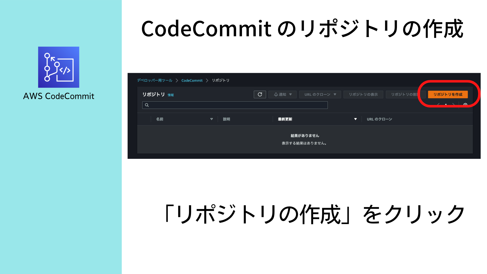
AWS コンソールからリポジトリを作成します。
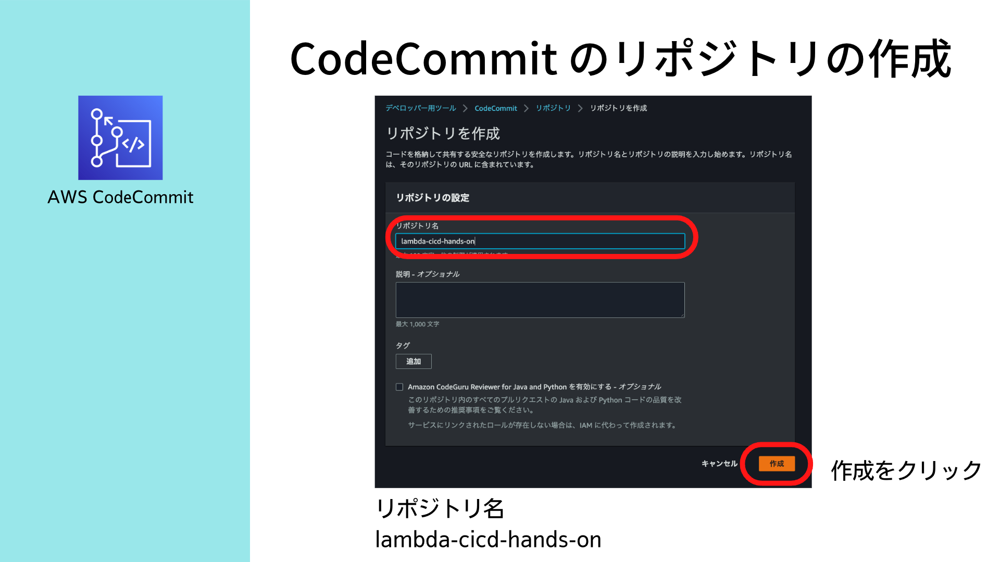
リポジトリ名を以下で作成
lambda-cicd-hands-on
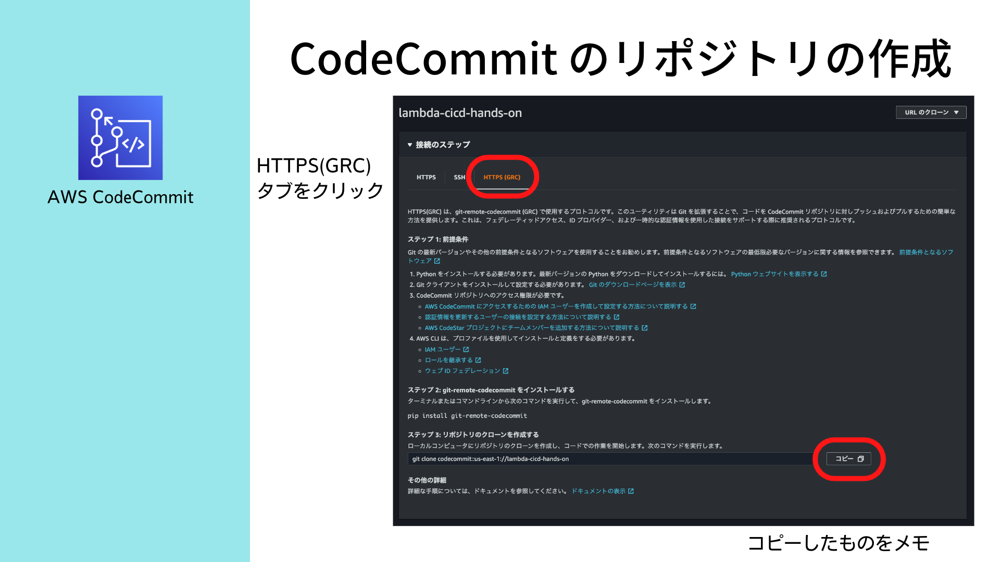
また、後で使用します。
git clone codecommit::ap-northeast-1://lambda-cicd-hands-on
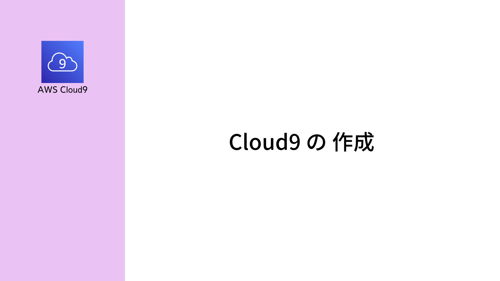
AWS 上のIDEである「Cloud9」の環境を構築します。 ここからファイルの編集や、Git操作を実施します
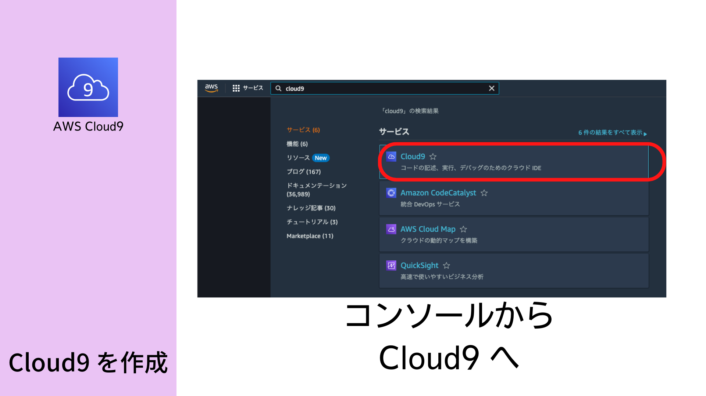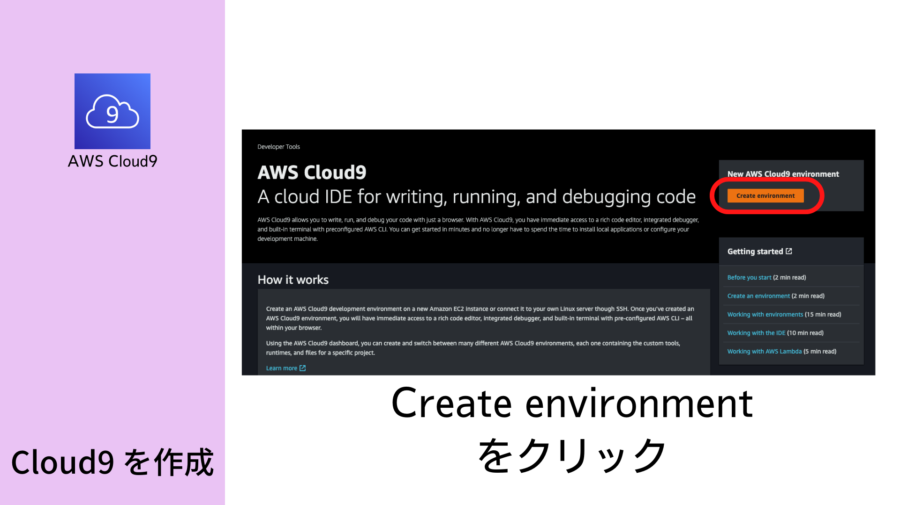 「Create environment」をクリック
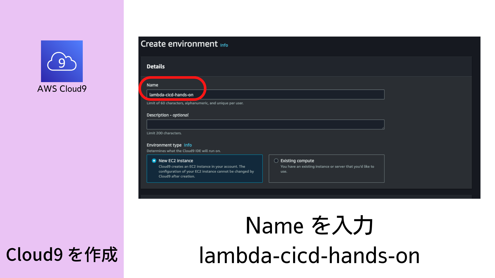 Nameを以下で作成
lambda-cicd-hands-on
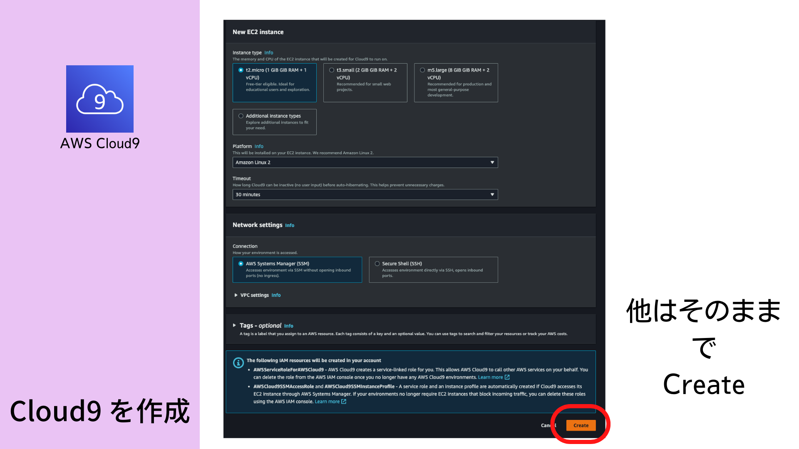
他はデフォルトのまま、「Create」を押下
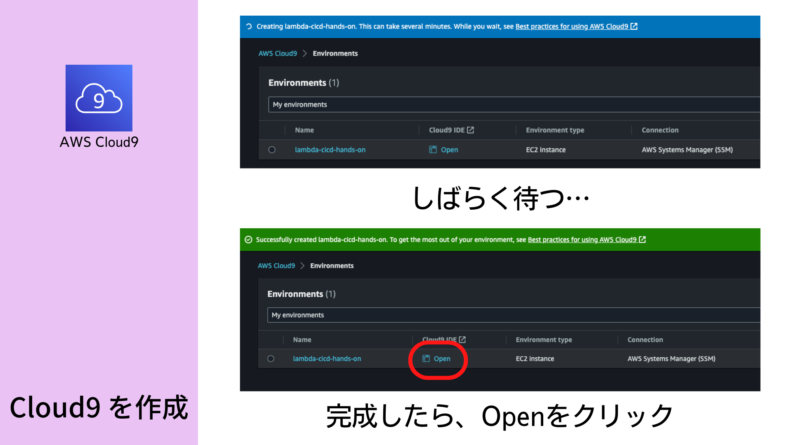
Openをクリックして、Cloud9を開いてみましょう。
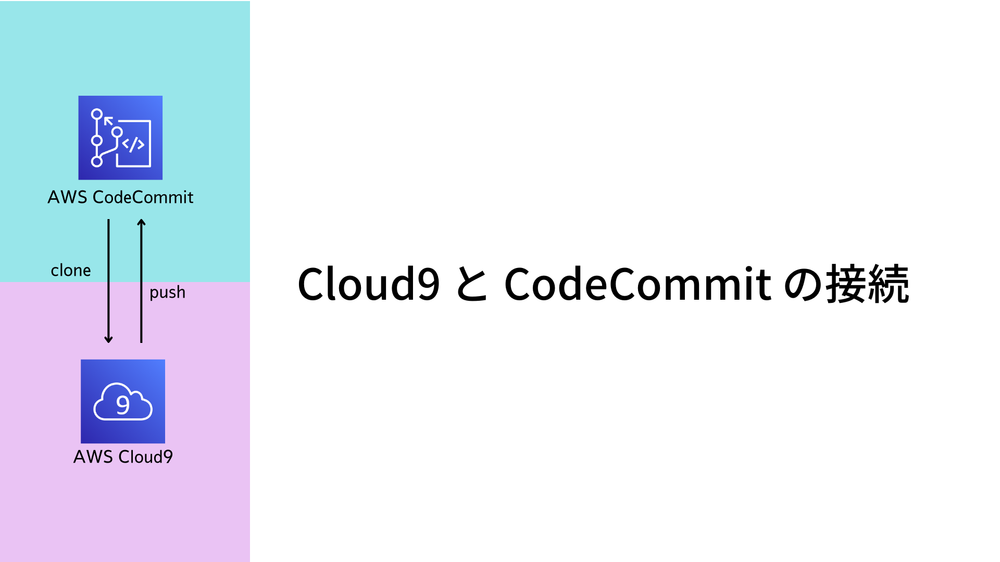 作成した CodeCommit リポジトリに対して、Cloud9 からファイルを追加してみましょう。
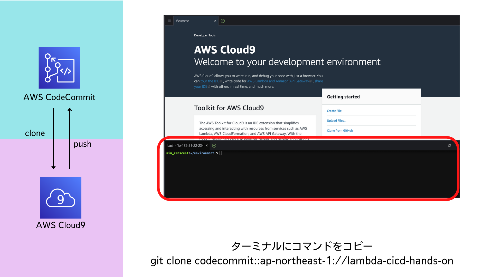 CodeCommit で、コピーしたHTTPS(GRC)を、Cloud9 の画面下部にのターミナルにコピーして実行
git clone codecommit::ap-northeast-1://lambda-cicd-hands-on
レスポンス
Cloning into 'lambda-cicd-hands-on'... warning: You appear to have cloned an empty repository.
git のユーザを指定します。
git config --global user.name "Your Name" git config --global user.email you@example.com
上記を自分の名前とメールアドレスに書き換えて実行してください
空のディレクトリがコピーされるので、そのディレクトリに移動します
cd lambda-cicd-hands-on
試しに、AWS上の CodeCommit に追加するファイルを作成します
touch test.md
Cloud9で test.md ファイルを編集し、以下の内容をコピーして保存してください。
# test
ちゃんとpushができるかテスト。
git のステージエリアにファイルを追加します
git add test.md
ステージに登録されているか、確認してみましょう
git status
レスポンス
On branch master
No commits yet
Changes to be committed:
(use "git rm --cached <file>..." to unstage)
new file: test.md
変更したファイルを コミットします
git commit -m "ファーストコミット"
CodeCommit に追加します
git push
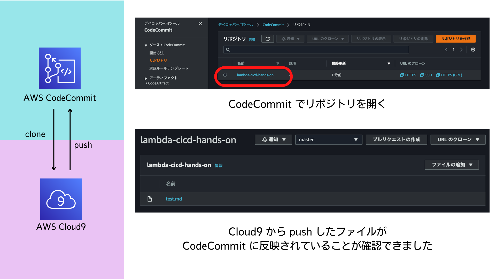 AWS コンソールで CodeCommit を開いて、ファイルが追加されていることを確認しましょう
Cloud9 に戻って、 Lambda 関数を定義するファイルを作成します
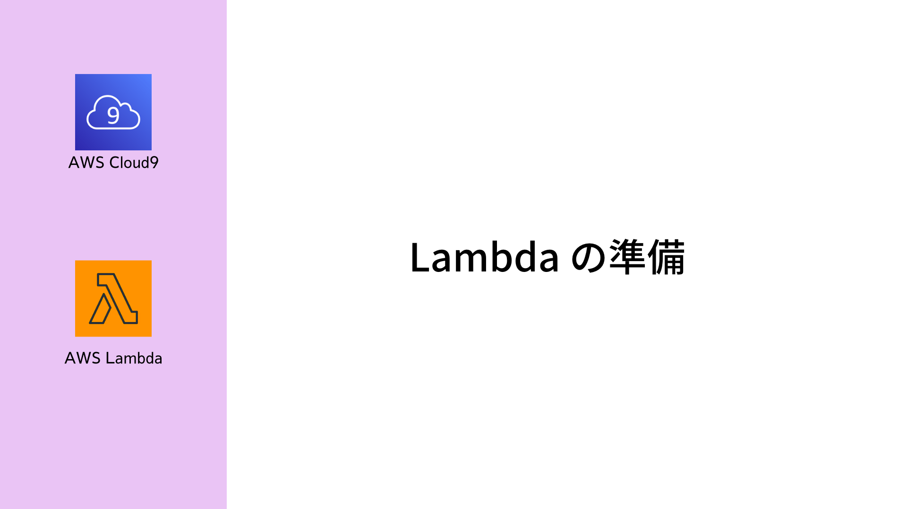
CodeCommit と関連づけられたディレクトリへに移動します
cd ~/environment/lambda-cicd-hands-on/
Gitと紐づいていると、ブランチ名（master) が表示される様になります。
(master) $
今回は node.js で定義された Lambda 関数を作成します。
以下のコマンドから、JavaScript ファイルを作成してください
touch hello-lambda.js
Cloud9で hello-lambda.js ファイルを編集し、以下の内容をコピーして保存してください。
exports.helloLambdaHandler = async () => {
const message = 'Hello, Lambda!';
console.info(`${message}`);
return message;
}
先ほどと、同様の手順で、このファイルをCodeCommit に反映させましょう。
git add hello-lambda.js git commit -m "add: lambda ファイルの追加" git push
CodeCommit の画面で、ファイルが追加されていることを確認してください。 （操作方法は省略）
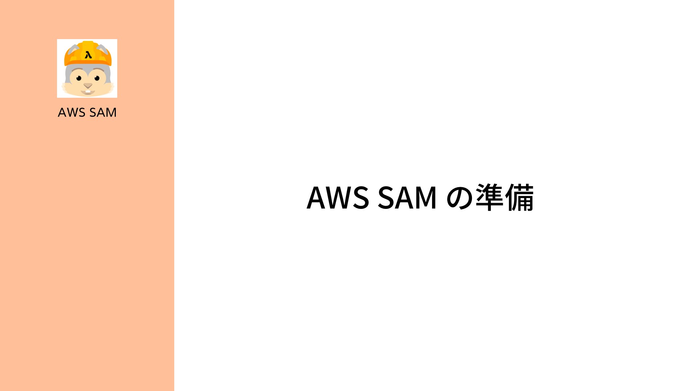
Cloud9 には SAM CLI がプリインストールされているので、特に作業は必要ありません。
Cloud9 のコンソールで以下のコマンドを実行し確認してみましょう。
sam --version
レスポンス
SAM CLI, version 1.57.0
touch template.yaml
Cloud9で template.yaml ファイルを編集し、以下の内容をコピーして保存してください。
AWSTemplateFormatVersion: 2010-09-09
Description: >-
lambda-cicd-hands-on
Transform:
- AWS::Serverless-2016-10-31
Resources:
helloLambdaFunction:
Type: AWS::Serverless::Function
Properties:
Handler: hello-lambda.helloLambdaHandler
AutoPublishAlias: SV
Runtime: nodejs16.x
Architectures:
- x86_64
MemorySize: 128
Timeout: 100
Description: A Lambda function that returns a static string.
Policies:
- AWSLambdaBasicExecutionRole
FunctionUrlConfig:
AuthType: NONE
Outputs:
HelloLambdaFunction:
Description: "Hello Lambda Function ARN"
Value: !GetAtt helloLambdaFunction.Arn
HelloLambdaFunctionUrl:
Description: "Function URLs endpoint"
Value: !GetAtt helloLambdaFunctionUrl.FunctionUrl
ここで、一旦 デプロイする前に、ローカル (Cloud9上)で実行してみましょう
sam local invoke
Cloud9 上にコンテナが用意され、しばらく待つと実行結果が帰ってきます。
Invoking hello-lambda.helloLambdaHandler (nodejs16.x) Image was not found. Removing rapid images for repo public.ecr.aws/sam/emulation-nodejs16.x Building image....................................................................................................................................... Skip pulling image and use local one: public.ecr.aws/sam/emulation-nodejs16.x:rapid-1.57.0-x86_64. Mounting /home/ec2-user/environment/lambda-cicd-hands-on as /var/task:ro,delegated inside runtime container 2022-12-08T10:51:16.375Z e1526a13-9113-4aee-8dfe-85a31b8e5159 INFO Hello from Lambda! END RequestId: e1526a13-9113-4aee-8dfe-85a31b8e5159 REPORT RequestId: e1526a13-9113-4aee-8dfe-85a31b8e5159 Init Duration: 1.45 ms Duration: 284.76 ms Billed Duration: 285 ms Memory Size: 128 MB Max Memory Used: 128 MB "Hello, Lambda!"
Cloud9 上のコンテナでLambdaが実行されました
hello-lambda.js で定義した message が出力されていることが確認できます。
message の内容を変更して、再度実行すると、内容が変更されていることが分かります。
作成したtemplate.yaml を CodeCommit に push します。
git add template.yaml git commit -m "add: SAM の テンプレートファイルの追加" git push
必要な初期設定と合わせて、Lambda関数をデプロイしてみましょう
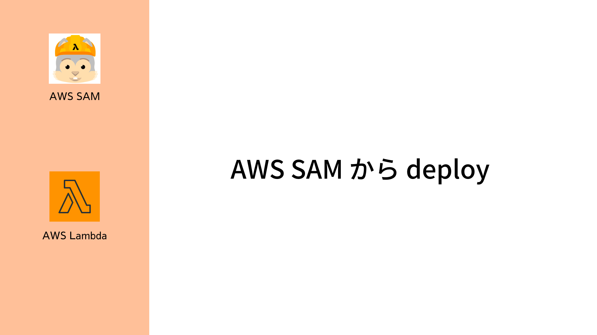
sam deploy --guided
以下、対話形式でのプロンプトを通して、初期設定を行い、samconfig.toml ファイルを作成します。
helloLambdaFunction Function Url may not have authorization defined, Is this okay? [y/N]でのみ、「Y」を選択しますが、 その他は、デフォルトを使いますので、何も入力せず進めてください。
Stack Name [sam-app]: AWS Region [ap-northeast-1]: #Shows you resources changes to be deployed and require a 'Y' to initiate deploy Confirm changes before deploy [y/N]: #SAM needs permission to be able to create roles to connect to the resources in your template Allow SAM CLI IAM role creation [Y/n]: #Preserves the state of previously provisioned resources when an operation fails Disable rollback [y/N]: helloLambdaFunction Function Url may not have authorization defined, Is this okay? [y/N]: Y Save arguments to configuration file [Y/n]: SAM configuration file [samconfig.toml]: SAM configuration environment [default]:
しばらく待っていると、必要なリソースが生成されていきます。
以下のテキストが表示されたら、成功です。
Successfully created/updated stack - sam-app in ap-northeast-1
この時、デプロイに必要な S3 バケットも同時に作成されています aws-sam-cli-managed-default-samclisourcebucket で始まる名前のバケットが作成されており、後ほど使用します。
その上に、今回生成した、Lambda Function Url のエンドポイントが表示されていますので、ブラウザで開いてみましょう。
ブラウザに、Hello, Lambda! が表示されていたら成功です！
AWS SAM を使って、Lambda関数がデプロイされ、アクセスすることができました！
最後に、AWS SAM が生成してくれたsamconfig.toml を CodeCommit に push します。
git add samconfig.toml git commit -m "add: toml ファイルの追加" git push
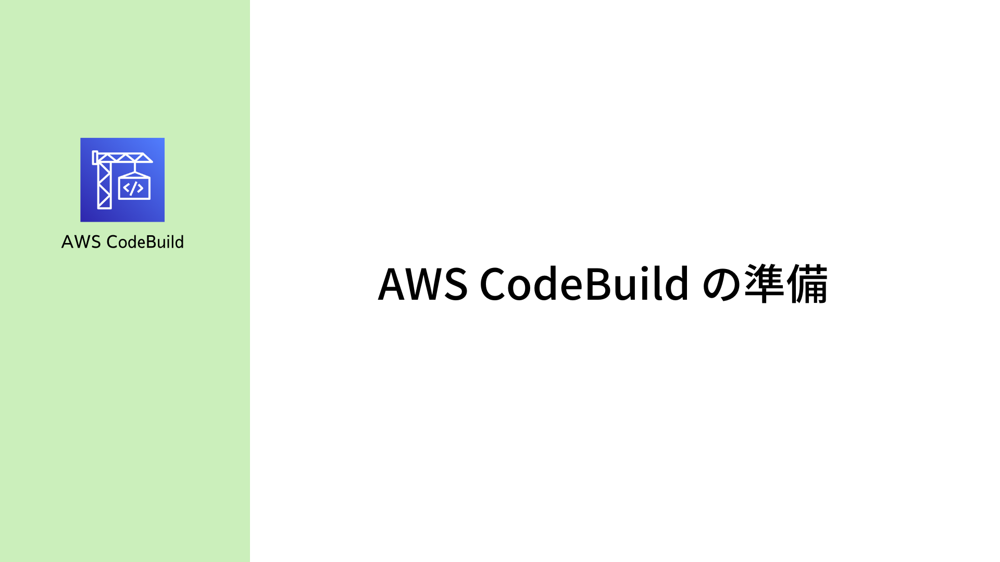
複数環境に対応するために、template.yaml ファイルを変更します。
以下を丸っとコピーして上書きしてください。
Parameters と FunctionName の部分を追記してます。
AWSTemplateFormatVersion: 2010-09-09
Description: >-
lambda-cicd-hands-on
Transform:
- AWS::Serverless-2016-10-31
Parameters: # 追加部分
Env: # prd: 本番、dev: 開発
Type: String
AllowedValues:
- prd
- dev
- manual
Default: manual
Resources:
helloLambdaFunction:
Type: AWS::Serverless::Function
Properties:
Handler: hello-lambda.helloLambdaHandler
AutoPublishAlias: SV
FunctionName: # 追加部分
!Join
- ''
- - 'hello-lambda'
- '-'
- !Ref Env
Runtime: nodejs16.x
Architectures:
- x86_64
MemorySize: 128
Timeout: 100
Description: A Lambda function that returns a static string.
Policies:
- AWSLambdaBasicExecutionRole
FunctionUrlConfig:
AuthType: NONE
Outputs:
HelloLambdaFunctionUrl:
Description: "Function URLs endpoint"
Value: !GetAtt helloLambdaFunctionUrl.FunctionUrl
CodeBuild での実行を定義する buildspec.yml ファイルを作成します
touch buildspec.yml
作成した buildspec.yml に以下の内容をコピーします
version: 0.2
phases:
build:
commands:
- aws cloudformation package --template-file template.yaml --s3-bucket $S3_BUCKET --output-template-file output.yml
- aws cloudformation deploy --template-file output.yml --s3-bucket $S3_BUCKET --stack-name $STACKNAME --capabilities CAPABILITY_IAM --region $REGION --parameter-overrides Env=$ENV
- aws cloudformation describe-stacks --stack-name $STACKNAME
ここで定義したコマンドが、CodeBuild でビルドする時に実行されるコマンドなのですが、先ほど試した、sam のコマンドが出てきません。
それは、CodeBuild が実行時に使用するコンテナには、AWS SAM がインストールされていないためです。
SAMで使用するテンプレートファイルは CloudFormation の拡張なので、AWS CLI での CloudFormation のオプションをそのまま使うことができます。
次は、変更したファイルをまとめて、CodeCommit へ push してみましょう。
git add . git commit -m "update: CodeBuild 対応" git push
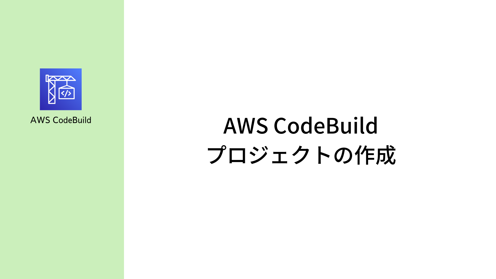 コンソールからの操作になります。
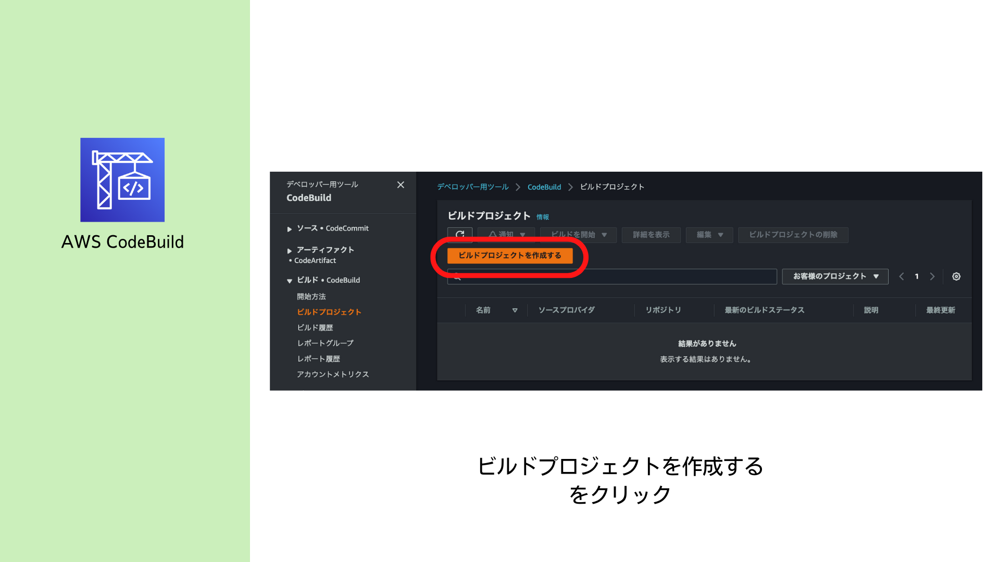 プロジェクトの作成をクリックします。
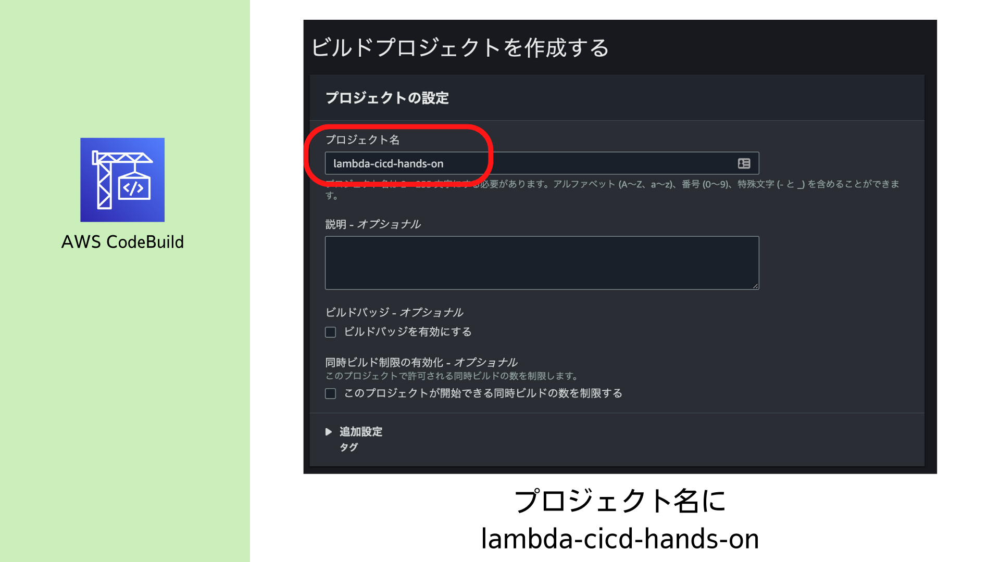
プロジェクト名に以下の文字列をコピーします
lambda-cicd-hands-on
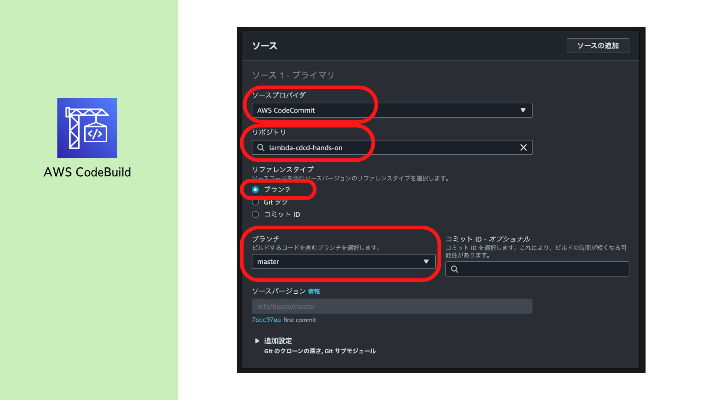
ソースプロバイダで「CodeCommit」を選択
リポジトリで今回作成した「lambda-cicd-hands-on」を選択
リファレンスタイプはデフォルトのまま「ブランチ」を設定し
「master」ブランチを選択します。
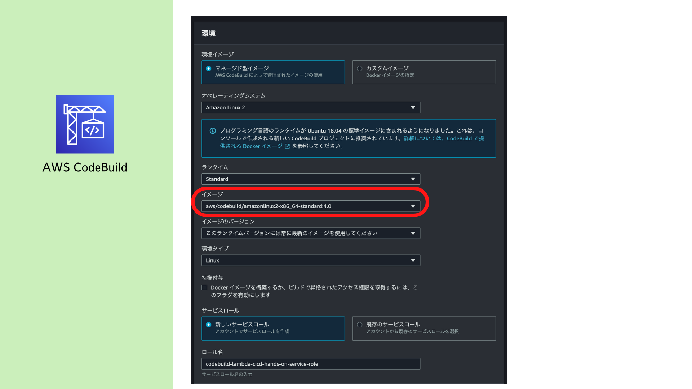 以下の様に設定します
環境イメージ | マネージド型イメージ | |
オペレーティングシステム | Amazon Linux 2 | |
ランタイム | Standard | |
イメージ | aws/codebuild/amazonlinux2-x86_64-standard:4.0 | |
イメージのバージョン | このランタイムバージョンには常に最新のイメージを使用してください | |
環境タイプ | Linux | |
特権付与 | 選択しない | |
サービスロール | 新しいサービルロール | |
ロール名 | そのまま | |
隠れている「追加設定」をクリックし、環境変数を4つ設定します
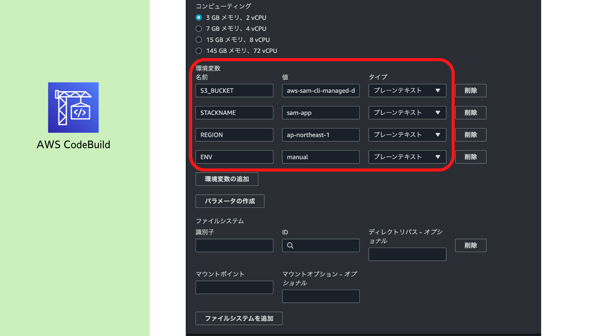
ここで、AWS SAM が作成した S3 Bucket 名を使用します。 S3のコンソールを開いてください。
aws-sam-cli-managed-default-samclisourcebucketで検索し、バケット名をコピーしてください
名前 | 値 | タイプ |
S3_BUCKET | 上記検索結果 | プレーンテキスト |
STACKNAME | sam-app | プレーンテキスト |
REGION | ap-northeast-1 | プレーンテキスト |
ENV | manual | プレーンテキスト |
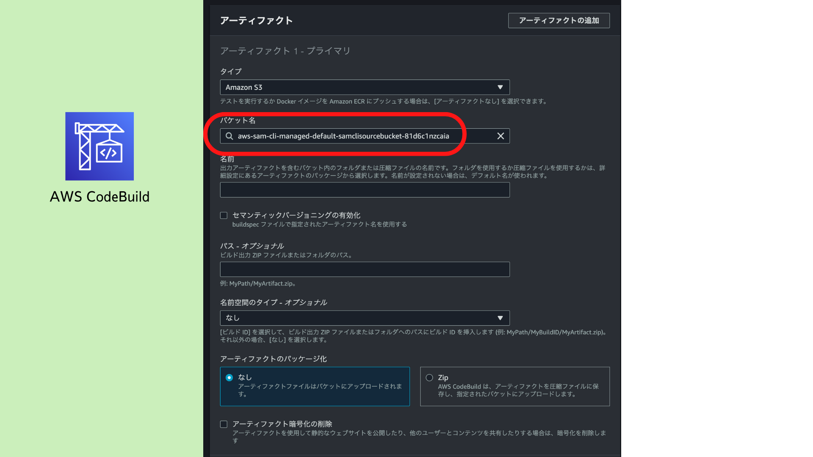
バケット名のところに、同じものをコピーします。
あとはそのままで大丈夫です。
「ビルドプロジェクトを作成する」をクリックします。
プロジェクトが正常に作成されると、自動的に画面が変わるので、それまで待ちます。
IAM Role にポリシーを追加して行きます。
先ほど、プロジェクトの作成に合わせて作成した IAM ロールに、必要な IAM ポリシー を追加していきます。
AWS コンソールから、IAMを開いて、左のペインから「ロール」を選択 codebuild-lambda-cicd-hands-on-service-role で検索してください
この IAM ロール に以下のものをアタッチしてください。
アタッチ後、IAMの画面は以下の様になります。
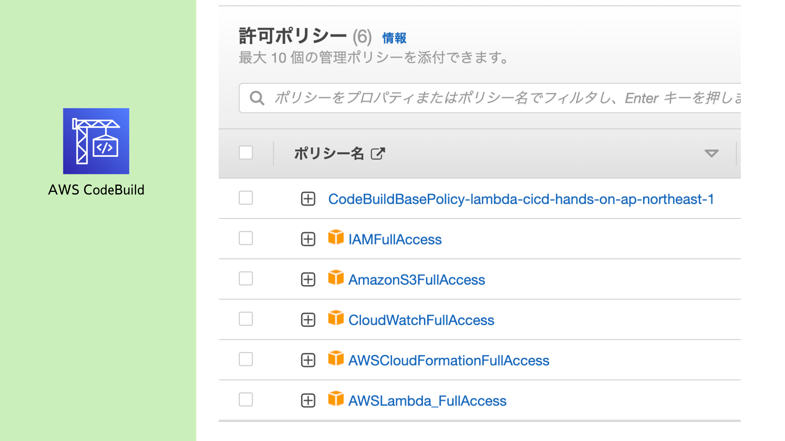
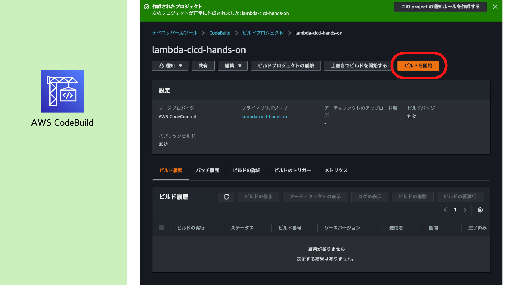 AWS コンソールから、CodeBuild を開き、「ビルドを開始」ボタンを押下して実行をしてみましょう。
「フェーズ詳細」タブを開くと、進捗がわかります。
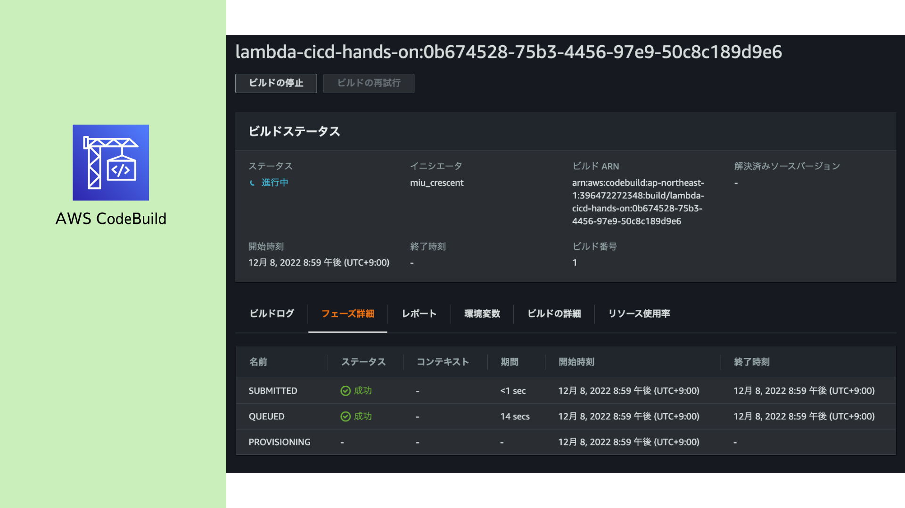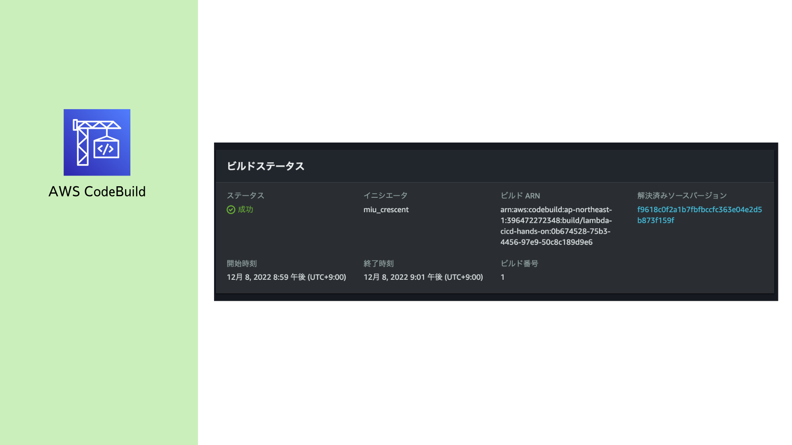
ステータスが成功になったら、完了です。
コンソールから作業をします 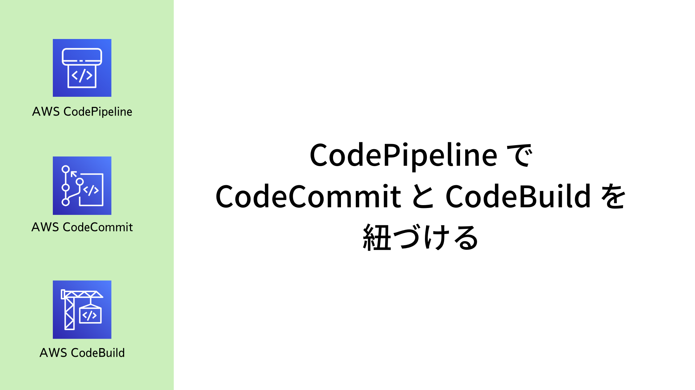 AWS コンソールで CodePipeline を開きます。
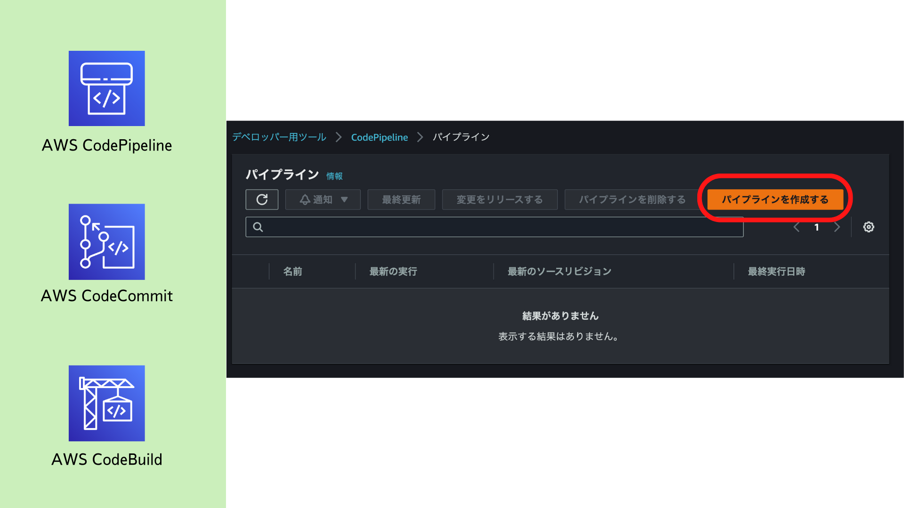 「パイプラインの作成」をクリック
まずは、開発環境用のパイプラインを作成します。
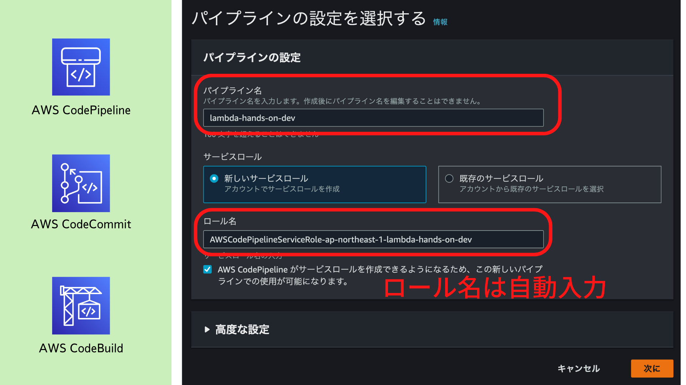 パイプライン名に以下をコピー。
開発環境用のパイプラインだとわかる様に、末尾に-devを付けます。
lambda-hands-on-dev
ロール名は自動的に以下となります。
AWSCodePipelineServiceRole-ap-northeast-1-lambda-cicd-hands-on-dev
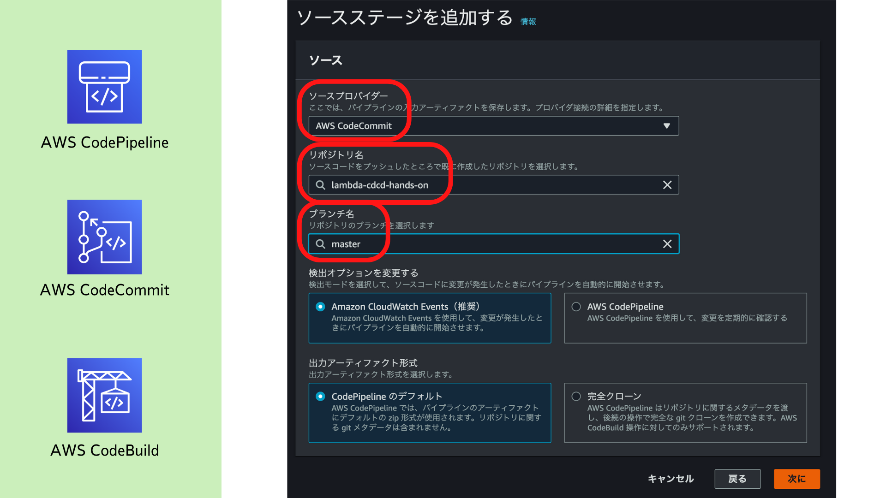
ソースプロバイダー | AWS CodeCommit | |
リポジトリ名 | lambda-cicd-hands-on | |
ブランチ名 | master | |
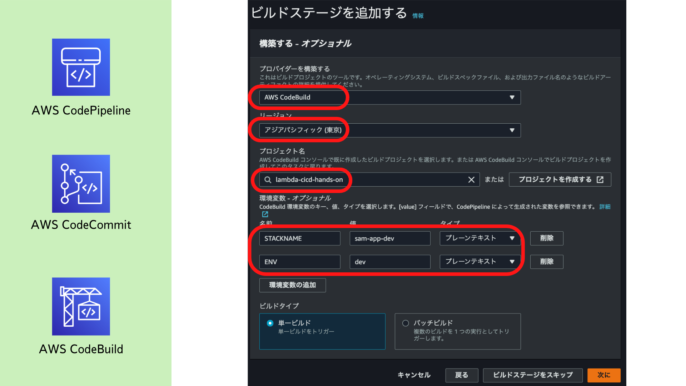
プロバイダーを構築する | AWS CodeBuild | |
リージョン | アジアパシフィック（東京） | |
プロジェクト名 | lambda-cicd-hands-on | |
先ほど、CodeBuild プロジェクトで設定した環境変数を、ここで一部上書きします。
この設定によって、同じプロジェクトを使用して、開発環境と本番環境を使い分けることができます。
名前 | 値 | タイプ |
STACKNAME | sam-app-dev | プレーンテキスト |
ENV | dev | プレーンテキスト |
スキップします。
内容を確認して、「パイプラインを作成する」をクリック。
しばらく待つと、パイプラインが動き出します。
CodeBuild をクリックして、詳細を確認してみましょう。
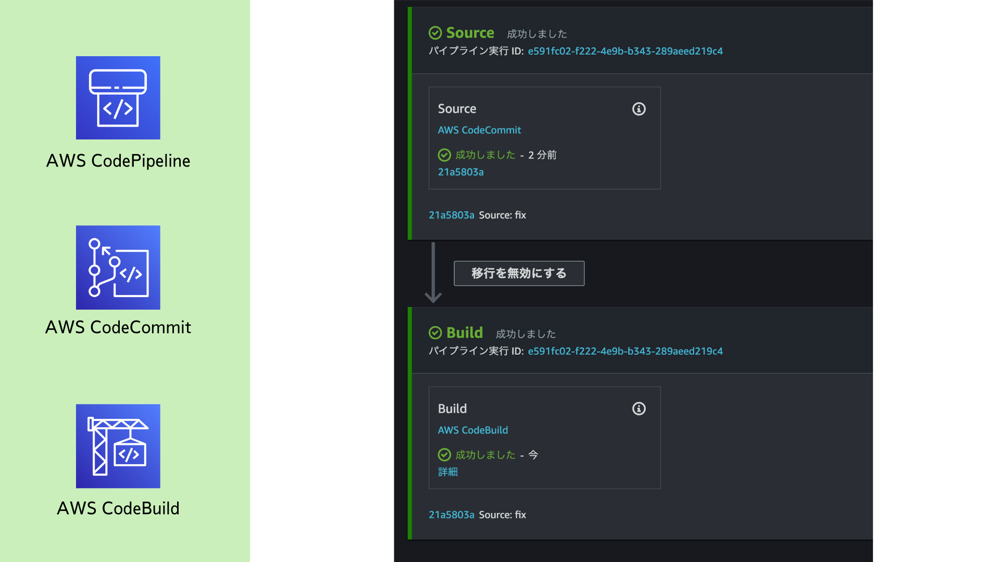
ここまで作成したリソースはこの様な形です。
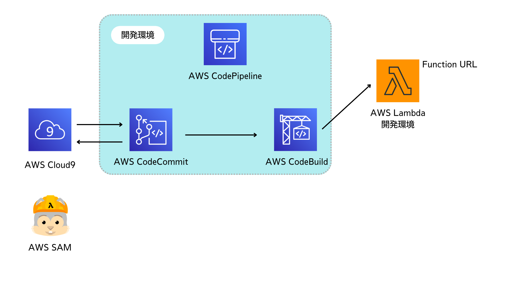
開発環境様にデプロイした Lambda にアクセスしてみよう。
AWS コンソールで Lambda を開きます
hello-lambda-dev が先ほど CodeBuild からデプロイされた Lambda 関数です。
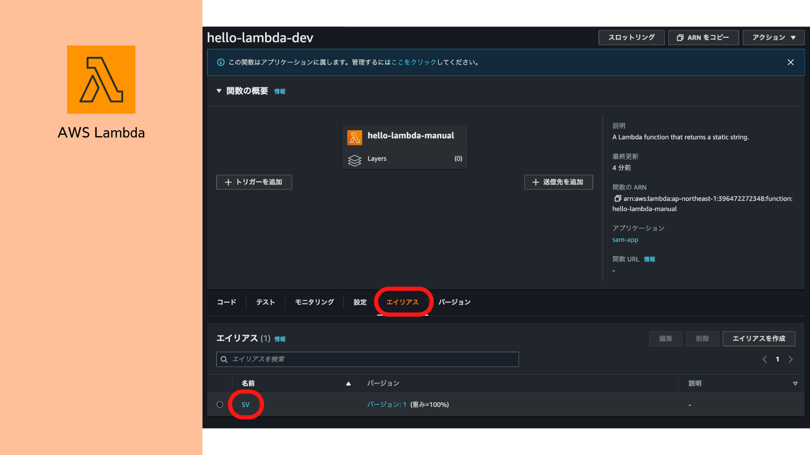
「エイリアス」タブから、「SV」をクリックします。
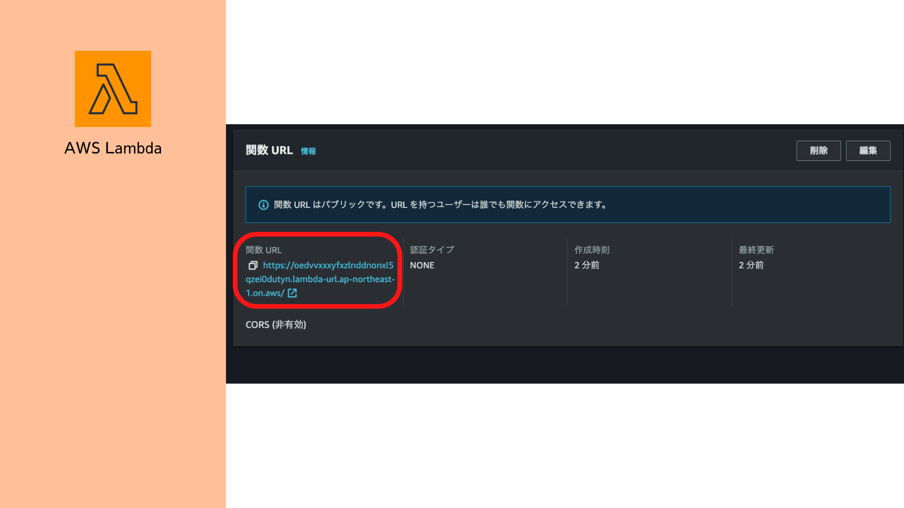
関数 URL をブラウザで開いてみましょう。
Hello, Lambda!
次に、本番環境用のリソースを作成していきましょう。 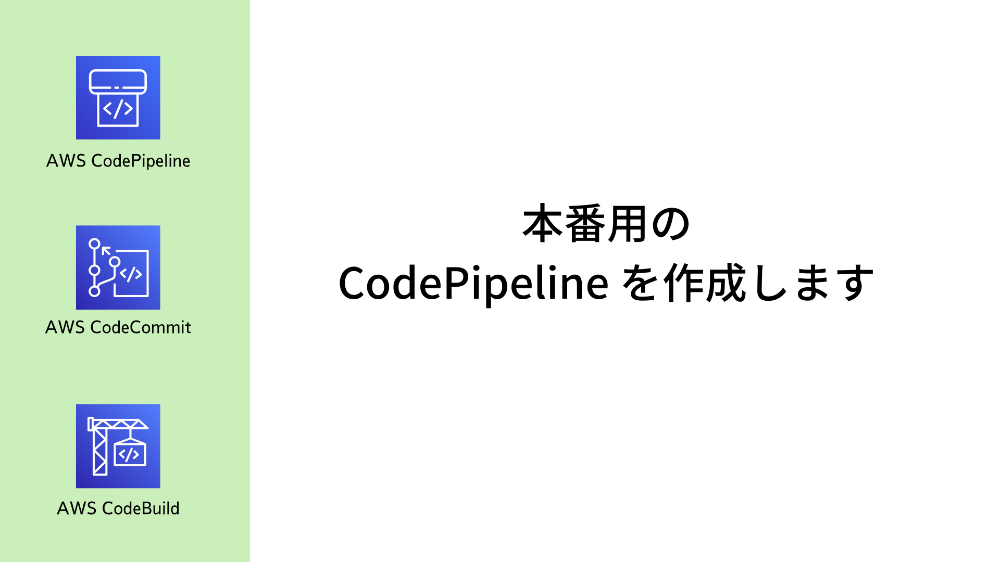
CodeCommit に本番環境ブランチを作成するため、Cloud9 に戻って、以下のコマンドを作成します。
git branch PRODUCTION
新しく作成したブランチに checkout します
git checkout PRODUCTION
レスポンス
Switched to branch 'PRODUCTION'
CodeCommit に PRODUCTION ブランチを新規に追加します
git push --set-upstream origin PRODUCTION
レスポンス
To codecommit::ap-northeast-1://lambda-cicd-hands-on * [new branch] PRODUCTION -> PRODUCTION branch 'PRODUCTION' set up to track 'origin/PRODUCTION'.
本番環境用のパイプラインを作成します。
AWS コンソールから、CodePipeline を開きます。
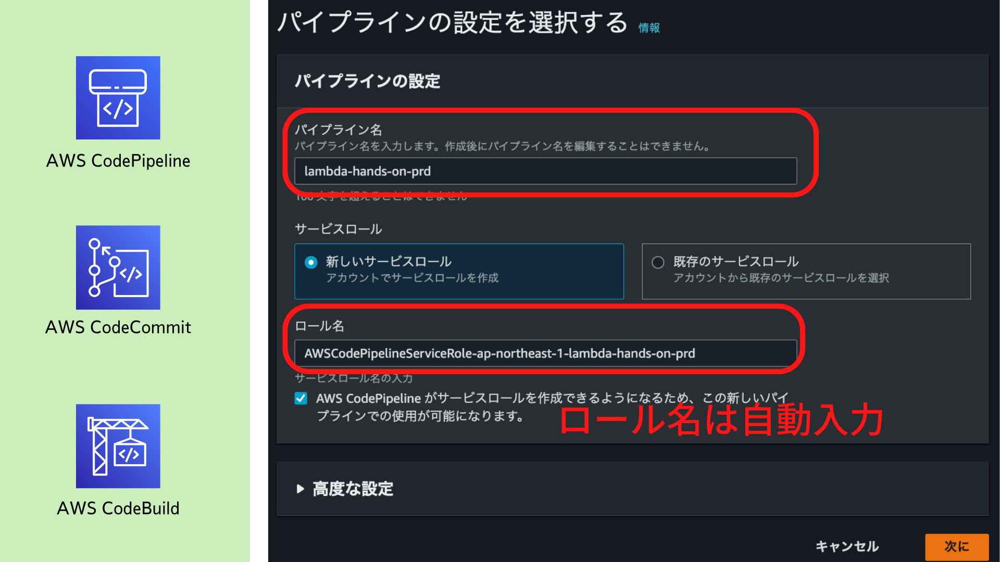 開発環境用のパイプラインだとわかる様に、末尾に-prdを付けます。
パイプライン名に以下をコピー。
lambda-hands-on-prd
ロール名は自動的に以下となります。
AWSCodePipelineServiceRole-ap-northeast-1-lambda-cicd-hands-on-prd
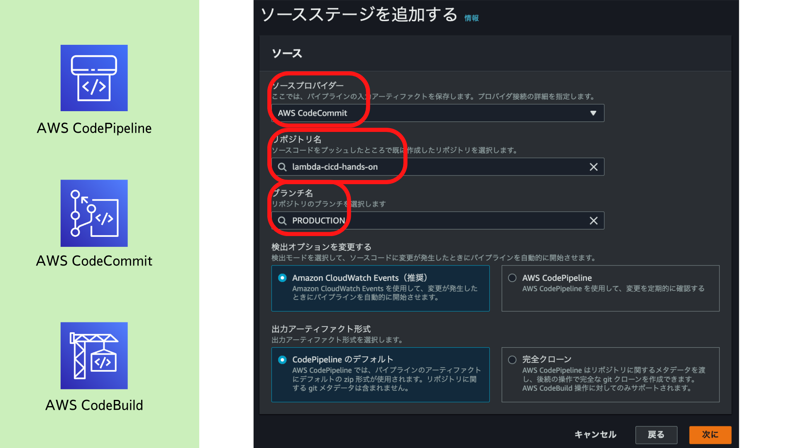
ソースプロバイダー | AWS CodeCommit | |
リポジトリ名 | lambda-cicd-hands-on | |
ブランチ名 | PRODUCTION | |
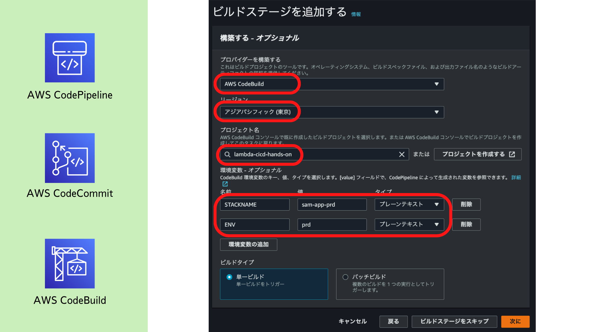
プロバイダーを構築する | AWS CodeBuild | |
リージョン | アジアパシフィック（東京） | |
プロジェクト名 | lambda-cicd-hands-on | |
先ほど、CodeBuild プロジェクトで設定した環境変数を、ここで一部上書きします。
この設定によって、同じプロジェクトを使用して、開発環境と本番環境を使い分けることができます。
名前 | 値 | タイプ |
STACKNAME | sam-app-prd | プレーンテキスト |
ENV | prd | プレーンテキスト |
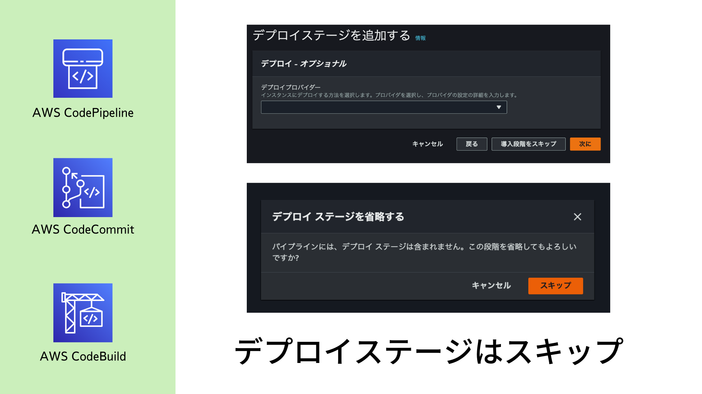
スキップします。
内容を確認して、「パイプラインを作成する」をクリック。
本番用のパイプラインが動き始めます。
先ほどと同様に、Lambda にアクセスしてみましょう。
hello-lambda-prd という名前の関数がデプロイされています。
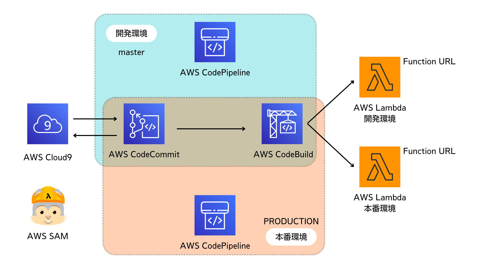
これで、上記の様な構成が構築できました。
この段階では、開発環境と本番環境は全く同じ内容の Lambda がデプロイされています。
次の章では、開発環境用のものにだけ変更し、２つの環境の違いを確認してみましょう。
feature ブランチを新たに作成し、これを開発用の master ブランチにマージします。
CodeCommit がマージされたイベントを CodePipeline が拾って、CodeBuild プロジェクトを自動で動かしてくれます。
Cloud9 に戻ります。
master ブランチに移動します
git checkout master
feature/text-edit ブランチを作成します。
git branch feature/text-edit
feature/text-edit ブランチに移動します。
git checkout feature/text-edit
レスポンス
Switched to branch 'feature/text-edit'
Cloud9で hello-lambda.js ファイルを編集します。
message の内容を変更してみましょう。
exports.helloLambdaHandler = async () => {
const message = 'Hello, dev Lambda!';
console.info(`${message}`);
return message;
}
編集をしたら保存します。
これを、CodeCommit 側に push します。
git add . git commit -m "テキスト修正"
以下のコマンドで、feature/text-edit ブランチを CodeCommit 側に作成します。
git push --set-upstream origin feature/text-edit
AWS コンソールで CodeCommit から プルリクエストを作成してみましょう。
「プルリクエストの作成」を押下
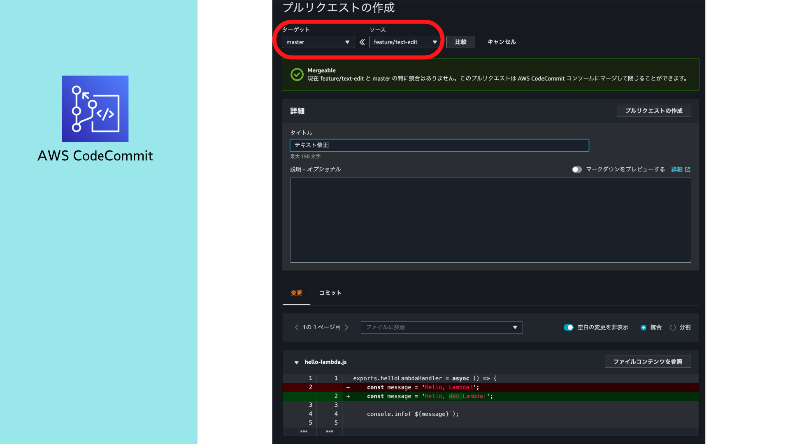
ターゲット | ソース |
master | feature/text-edit |
タイトルを入力
テキスト修正
変更部分が表示されます。
右下の「プルリクエストの作成」を押下。 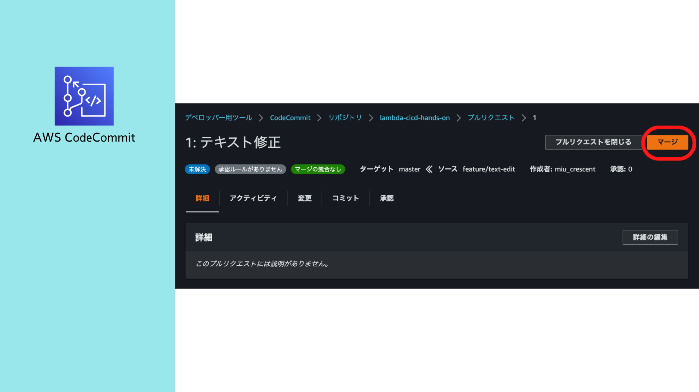 「マージ」を押下 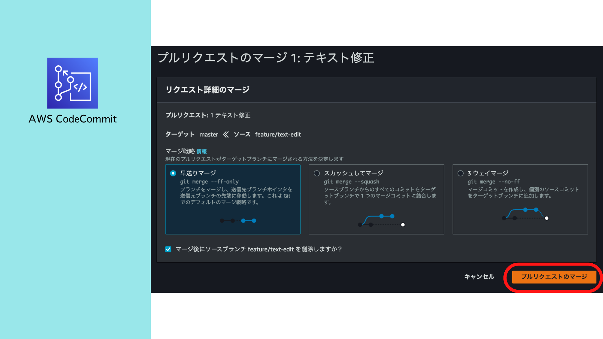 「プルリクエストのマージ」を押下 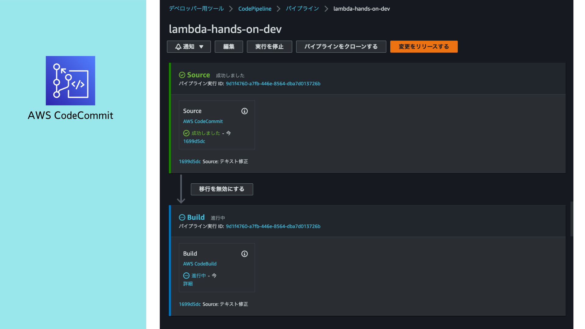lambda-hands-on-dev のパイプラインだけが動き始めます。
lambda-hands-on-dev と lambda-hands-on-prd をそれぞれ開いて、エンドポイントの違いを見てみましょう。
ここから、おまけです。
時間に余裕がある方、後で試してみたい方はぜひ。
エイリアスの設定を変更して動きを確認してみましょう。
本格的な Blue/Green デプロイとまでは行きませんが、 過去の状態の状態に即座に戻したり、重みに基づいてトラフィックを移動させることができます。
Lambda の バージョンとエイリアスの動きを簡単に試してみましょう。
今回は、本番環境にデプロイされた Lambda 関数にミスが発覚し、すぐに元に戻したい。という状況を想定してみましょう
PRODUCTION <- master のプルリクエストを作成し、マージします。
lambda-hands-on-prd の 関数 URL をブラウザで開き、内容を確認します。
この関数URLを開いたタブはまた後で使用するので、そのまま開いておいてください。
レスポンス
Hello, dev Lambda!
エイリアスに紐づくバージョンを変更することで、元のメッセージが出る様に手動で変更してみましょう。
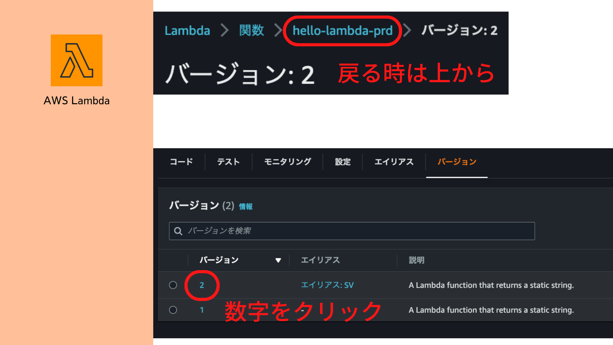
「バージョン」タブを開いてみると、2つのバージョンが存在していることがわかります。
バージョンの数字の部分をクリックして、それぞれの「コード」タブから内容の違いを確認します。
message の部分が
バージョン１ では、Hello, Lambda!
バージョン２ では、Hello, dev Lambda!
となっていることが、確認できます。
画面上部のパンクズリストから、lambda-hands-on-prd をクリックして戻ります。
次に、エイリアスの編集を行なって、バージョンを元に戻してみましょう。
「エイリアス」のタブを開きます
左側の丸をクリックして、編集をクリック
バージョンで「1」を選択して、保存します。
これで、エイリアスに紐づいたバージョンが「1」に変わりました。
先ほど開いた関数URLのブラウザをリロードしてみましょう。
表示がHello, Lambda!に変わったことが確認できます。
この様にバージョンとエイリアスを使うことで、手動で簡単に前の状態に戻すことが可能になります。
次に、同じ関数URLからのアクセスを２つのバージョンに確率で振り分けてみましょう。
先ほどと同様に、「エイリアス」タブから、エイリアスの編集を行います。
上記のバージョンを「2」に
加重エイリアスを開いて、追加のバージョンを「1」にして、重みを50に設定して、保存します。
これで、１つのエイリアスに２つのバージョンが紐づきました。
この状態で、関数URLを開いたタブをリロードを繰り返すと、Hello, dev Lambda!とHello, Lambda!が50％の確率で表されます。
この様に、エイリアスとバージョンを組み合わせると、コードの変更を行うことなく、複数の環境を共存させることが可能になります。
aws-sam-cli-managed-default-samclisourcebucketから始まるバケットを「空にする」